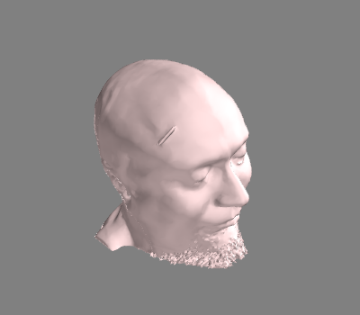

This can be useful to reduce computation time when using a cloud of digitization points for coordinate alignment instead of e.g. EEG-cap positions.
Out:
1 BEM surfaces found
Reading a surface...
[done]
1 BEM surfaces read
# Authors: Denis Engemann <denis.engemann@gmail.com>
# Alexandre Gramfort <alexandre.gramfort@telecom-paristech.fr>
#
# License: BSD (3-clause)
import mne
from mne.surface import decimate_surface # noqa
print(__doc__)
path = mne.datasets.sample.data_path()
surf = mne.read_bem_surfaces(path + '/subjects/sample/bem/sample-head.fif')[0]
points, triangles = surf['rr'], surf['tris']
# reduce to 30000 meshes equaling ${SUBJECT}-head-medium.fif output from
# mne_make_scalp_surfaces.py and mne_make_scalp_surfaces
points_dec, triangles_dec = decimate_surface(points, triangles,
n_triangles=30000)
from mayavi import mlab # noqa
head_col = (0.95, 0.83, 0.83) # light pink
p, t = points_dec, triangles_dec
mlab.triangular_mesh(p[:, 0], p[:, 1], p[:, 2], t, color=head_col)
Total running time of the script: ( 0 minutes 4.668 seconds)